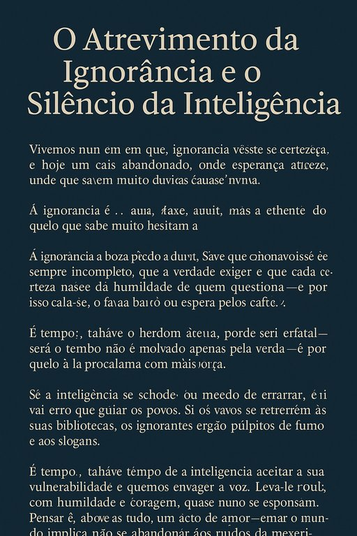

Publicado em 2025-06-20 10:01:29
Vivemos num tempo em que a ignorância veste-se de certeza, e a mediocridade desfila com arrogância no palco das opiniões fáceis.
É um tempo estranho — paradoxal — em que os que sabem pouco falam muito, e os que sabem muito hesitam em falar.
A ignorância é atrevida porque desconhece a vastidão daquilo que ignora.
Não tem medo de errar, porque nem sequer concebe a hipótese de estar errada.
É leve, ruidosa, impulsiva — e por isso conquista palcos, microfones e algoritmos.
Já a inteligência…
Ah, a inteligência carrega o fardo da dúvida.
Sabe que o conhecimento é sempre incompleto, que a verdade exige rigor, e que cada certeza nasce da humildade de quem questiona.
E por isso cala-se. Ou fala baixo. Ou espera pelos factos.
Mas esse silêncio, ainda que nobre, pode ser fatal.
Porque o mundo não é moldado apenas pela verdade —
É moldado por quem a proclama com mais força.
Se a inteligência se esconder por receio de errar, será o erro que guiará os povos.
Se os sábios se recolherem às suas bibliotecas, os ignorantes erguerão púlpitos de fumo e slogans.
É tempo, talvez, de a inteligência aceitar a sua vulnerabilidade e mesmo assim erguer a voz.
Deixar-se ouvir, com humildade e coragem, com firmeza e compaixão.
Porque pensar é, acima de tudo, um ato de amor — e amar o mundo implica não o abandonar aos ruídos da mediocridade.